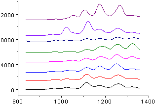
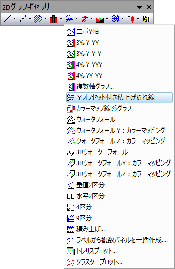
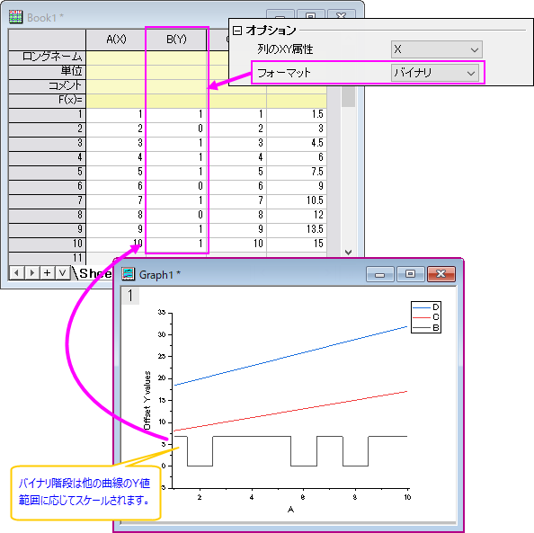

Yオフセット付き積上げ折れ線
StackLineYOffset-Graph
- 
必要なデータ
最低1つのY列あるいは、その部分領域を選択します。理想的には、少なくとも2つのY列、または少なくとも2つのY列の範囲を選択します。関連付けられたX列がある場合はそれを使用し、そうでない場合は、Y列のサンプリング間隔または行番号が使用されます。
グラフ作成
データを選択します。
を選択します。
または、
2DグラフツールバーのYオフセット付き積上げ折れ線ボタンをクリックします。
- 
テンプレート
OFFSETSTACKY.OTP (Originのプログラムフォルダにインストールされています。)
Note
- デフォルトで、 Yオフセット付き積上げ折れ線グラフは、「個別」データプロットオフセットタイプを使用しています。各データプロットは、個別のオフセット設定が割り当てられており、この設定は、作図の詳細ダイアログボックスで変更可能です。
- 各曲線の距離は、このオフセット機能を使って調整することが可能で、元のデータを変更する必要がありません。この機能を使うことで、曲線が重ならずに各曲線を明確に表示することができます。
- グラフはデータセットのサブグループをプロットすることができます。作図の詳細積み上げタブをご覧ください。
- ソースデータセットにバイナリフォーマとのY列がある場合、そのバイナリ列の曲線は、すべての積み上げ曲線が同じスケールになるようにスケーリングされます。Originは、バイナリではないすべてのプロットのY値範囲を検索し、これらの範囲の平均でバイナリ列データをスケールします。
- 
- Note: システム変数@SBDでバイナリ階段の高さを設定できます。デフォルトは60で非バイナリプロットのY範囲の平均の60%です。